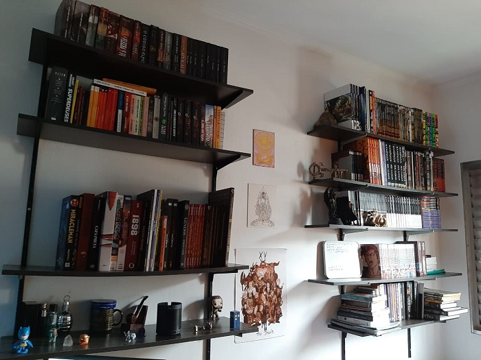

Eu sou uma pessoa que gosta muito de ler. Devo dizer, inclusive que gastei muito dinheiro com esse hábito, mas gosto de pensar que nesse caso eu investi auto aprimoramento, cultura e conhecimento.
Por mais que eu curta muito ler livros, minha maior paixão são os quadrinhos. Banda desenhada, como dizem os patrícios, ou o bom e velho gibi(e vamos esclarecer logo, mangá é gibi, Graphic Novel é gibi, ponto final).
O quadrinho é um formato de contar estórias, gosto muito dele pela sua estrutura complexa que permite você flertar com outras mídias e formatos sem precisar mudar sua cerne, e sim se auto melhorar sempre.
Você pode ter quadrinhos com estruturas fixas que ao mesmo tempo apresentam estruturas narrativas riquíssimas, como Watchmen do Alan Moore por exemplo, ou as experimentações (a base de "química pesada")do Grant Morrison em Homem Animal. Temos também diversos exemplos de narrativas visuais esplendidas nos gibis japoneses(ok, mangás), onde a ação sequencial é mostrada com bela estruturação, exemplos como Blade A Lâmina do Imortal ou Akira.
Por enquanto é isso, deixo vocês uma foto de minha pequena coleção, e um vídeo da mitologia criada pela DC Comics (ela sim tem clássicos, diferente da concorrente direta)
